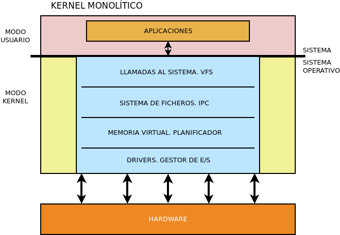
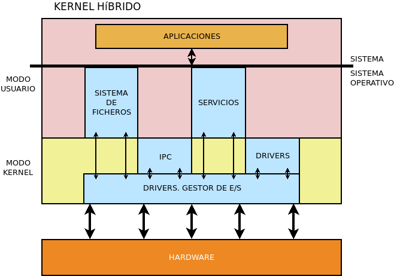

10.1.1.2.1. Concepto¶
El sistema operativo es el conjunto de programas básicos del ordenador que se encargan de hacer de intermediario entre el hardware y el resto de aplicaciones y que posibilitan la comunicación del usuario con el sistema informático. Como consecuencia de que es indispensable para la ejecución de las aplicaciones y la comunicación con el usuario, es el software que intenta cargar la máquina al arrancar.
Su existencia permite a las aplicaciones abstraerse de las particularidades de los componentes físicos y ejecutarse concurrentemente sin que una de ellas monopolice el procesador o la memoria.
Antes de continuar es preciso explicar el concepto de sistema operativo monopuesto (SOM) que se desarrolla a lo largo del módulo, término que invita en cierta medida a la confusión. Un sistema operativo monopuesto no es un sistema aislado, esto es, sin capacidad de comunicación por red con el exterior, porque, si bien es cierto que en el pasado existían tales sistemas[1], desde hace ya mucho tiempo no es así. La diferencia entre un sistema operativo monopuesto y un sistema operativo en red (SOR) no es la ausencia de capacidades de red, sino el hecho de que un SOR constituye junto al resto de los sistemas de su red un conjunto cooperativo de sistemas que comparten usuarios, permisos de acceso y otra serie de recursos, por lo general porque uno o varios de los sistemas ejercen de servidores, mientras que el resto actúan como clientes. Un SOM, en cambio, se limita a comunicarse por red o a lo más compartir algún recurso, como una impresora de red o un directorio compartido, pero sin que haya una integración plena de los servicios.
10.1.1.2.1.1. Funciones¶
Las funciones básicas de un sistema operativo pueden resumirse en:
- Controlar todos los componentes físicos y ponerlos a disposición del usuario y las aplicaciones. Esto implica gestionar procesos, memoria, acceso a disco, etc.
- Facilitar una base de ejecución a las aplicaciones, independiente de las características específicas del hardware.
- Gestionar la ejecución de las aplicaciones.
- Facilitar la comunicación con el resto de dispositivos.
- Supervisar, registrar y corregir errores producidos por el software o e hardware.
- Ofrecer al usuario una interfaz que le permita ejecutar programas y administrar el propio sistema operativo.
10.1.1.2.1.2. Historia¶
Aunque las generaciones de ordenadores han estado determinadas por innovaciones en el hardware, el software ha ido evolucionando de su mano. Así, pues, tomemos estas mismas generaciones y comprobemos qué ocurrió en cada una de ellas con el sistema operativo:
- Primera generación
- No hay prácticamente sistema operativo en ella, por lo que el usuario debía introducir directamente el programa en memoria actuando sobre una serie de microinterruptores.
- Segunda generación
- Aparecen los sistemas operativos realizando tareas muy simples con el fin de facilitar la comunicación entre usuario y máquina. Estos sistemas operativos permitían el procesamiento por lotes, esto es, la ejecución de un conjunto de tareas que se leían de una cinta o tarjeta perforada.
- Tercera generación
La aparición de los circuitos integrados da un gran empuje a los sistemas operativos que pueden permitirse ser más elaborados y complejos y aparecen sistemas operativos que manejan los conceptos de:
- Multiprogramación: Se alberga en memoria más de un programa y se aprovecha para ejecutar un segundo programa durante el tiempo en que un primer programa ha ordenado una operación de E/S y no ha recibido aún respuesta.
- Tiempo compartido: Como en el anterior, pero el sistema operativo da paso a la ejecución de otro programa cuando al primero ya le ha dedicado un cierto tiempo. Esto permite la introducción de los sistemas multiusuario.
- Tiempo real: se realizan diversas tareas, pero estas tienen unas restricciones de tiempo que, si no se cumplen, provocan el fallo.
- Multiprocesador: sistemas que corren en varios procesadores, lo que implica la coordinación de tareas (p.e. el acceso a memoria).
En 1969, surge el sistema operativo UNIX cuya influencia ha sido capital en el desarrollo de los sistemas operativos modernos.
- Cuarta generación
- Junto a UNIX, se utiliza el sistema operativo CP/M en los procesadores Intel 8080 y Z80.
- Quinta generación
Aunque lo previsible es que para los ordenadores personales compatibles se hubiera usado CP/M, desacuerdos de Digital Research con IBM propiciaron que fuera MS-DOS el sistema mayoritario en los PCs. Por otra lado, para sus ordenadores personales Apple desarrolló MacOs[2] que incorporó una interfaz GUI de ventanas manejadas con ratón frente a las interfaces CLI de los ordenadores compatibles. A MS-DOS sucedió más adelante el sistema operativo Windows de Microsoft. Otros sistemas operativos que no prosperaron fueron OS/2, que incluía también GUI y con el que IBM intentó buscar sucesor a MS-DOS, y BeOS, también con GUI y que no sobrevivió al cambio de milenio.
En los servidores siguieron predominando UNIX y sus derivados: familia BSD, Solaris, Linux, etc.
Más adelante, nos extenderemos mejor en cuáles son los sistemas operativos que copan el mercado actual.
10.1.1.2.1.3. Componentes¶
En un sistema operativo pueden distinguirse tres partes:
- Kernel (o núcleo)
- Es la parte que constituyen fundamentalmente el sistema operativo y que permite que cumpla con las cinco primeras funciones que se han citado anteriormente.
- Interfaz
- Es la parte que permite al usuario interactuar con el sistema. Se dedicará más adelante un epígrafe a las interfaces.
- Aplicaciones
- Son programas que acompañan al kernel y que, a través de la interfaz, permiten realizar labores sobre el sistema operativo. Por ejemplo, un programa para monitorizar los procesos existentes o para manipularlos.
10.1.1.2.1.4. Tipos¶
Los sistemas operativos pueden clasificarse según distintos criterios:
Modo de operación
- Procesamiento por lotes
Este modo apareció en la segunda generación y consiste en realizar varias tareas de forma secuencial, esto es, hasta que no acaba la primera, no comienza la segunda y asi sucesivamente. Por tanto, no se realizan varias tareas simultáneamente.
Los tiempos de respuesta[3] suelen ser altos.
- Tiempo compartido o interactivos
En este modo, el sistema solicita información al usuario para llevar a cabo las tareas y es capaz de simular que las realiza simultáneamente ejecutando pequeñas partes de unas y otras, procurando optimizar los tiempos de respuesta de todas ellas. Es habitual, por ejemplo, que dé preferencia a aquellos procesos cuya resolución impacienta al usuario como responder a las pulsaciones de teclado cuando el usuario escribe un documento frente a otras que se ejecutan en segundo plano y a las que el usuario no está atento y, por tanto, no aguarda una pronta respuesta como una actualización rutinaria de las aplicaciones del sistema.
Los sistemas operativos genéricos modernos utilizan este modo de operación sin menoscabo de que en ocasiones les interese aplicar el procesamiento por lotes.
- Tiempo real
- Es aquel modo en que un tiempo de respuesta fuera del límite prestablecido que, por lo general, es muy corto, es inaceptable y provoca fallo. Los sistemas que actúan con este modo de operación, se utilizan habitualmente en ámbitos muy específicos como el control aéreo, los sistemas automáticos de conducción o los sistemas industriales de fabricación automática.
Número de usuarios
Atendiendo al número de usuarios que pueden utilizar el sistema simultáneamente:
- Monousuario
Son aquellos en que sólo un usuario puede usar el sistema a la vez. Puede ser monousuario estricto si sólo permite que se ejecuten programas que pertenecen a un usuario como es el caso de MS-DOS (que, de hecho, carecía de usuarios), ⁺Windows 9X*, Windows Me o MacOs clásico hasta la versión 8; o monousuario en la interacción que son aquellos que permiten dejar en segundo plano programas de otros usuarios, pero no permiten la interacción simultánea de dos usuarios distintos como las restantes versiones de clientes Windows hasta la fecha (NT, 2000, XP, Vista, 7, 8, 10) y MacOs v9.
Advertencia
Un sistema monousuario no es exclusivamente un sistema con un único usuario
- Multiusuario
- Son aquellos en que varios usuarios pueden simultáneamente interactuar con el sistema operativo y consumir recursos. Son sistemas multiusuarios todos los derivados de UNIX (Linux, FreeBSD, MacOs v10[4]) y las versiones servidor de Windows (NT, 20XX).
Número de procesos
Un proceso en un programa en ejecución cuyas instrucciones se encuentran total o parcialmente cargadas en la memoria principal. Por tanto, un programa, antes de ser ejecutado, no es más que un fichero o un conjunto de ficheros almacenados en la memoria secundaria (en el disco duro por lo general). En el momento en que se ordena su ejecución pasa a cargarse en memoria y a constituirse un proceso. Cada ejecución, por otro lado, constituye un proceso diferente.
Este criterio atiende al número de procesos que el sistema operativo es capaz de gestionar simultáneamente:
- Monotarea (monoprogramación)
Son los sistemas operativos que permiten la ejecución de un único proceso simultáneamente, de manera que no puede ejecutarse un segundo proceso hasta que el primero no se ha completado.
No se utilizan sistemas operativos monotarea. Del pasado, MS-DOS era monotarea.
- Multitarea (o multiprogramación)
Son sistemas en los que es posible la ejecución concurrente de varios procesos. Esto en puridad sólo es posible cuando el sistema dispone de varios procesadores, pero en sistemas con un único procesador se usa la técnica del tiempo compartido para emular la simultaneidad de procesos.
La multitarea exige un algoritmo de planificación de procesos que se verá al tratar la gestión de procesos. Los sistemas operativos modernos son todos multitarea.
Número de procesadores
Ligado al número de procesadores de que disponga el sistema informático:
- Monoproceso
Son sistemas operativos que son capaces únicamente de utilizar un procesador. Esto, sin embargo, no significa que sean forzosamente monotarea, ya que pueden usar la técnica del tiempo compartido para lograr la multitarea.
Son sistemas operativos monoproceso MS-DOS y los sistemas Windows ajenos a la rama NT (Windows 9X, Windows Me).
- Multiproceso
Son sistemas operativos capaces de utilizar simultáneamente varios procesadores. En consecuencia estos sistemas operativos ejecutan simultáneamente varias instrucciones, una en cada procesador, sin que esto sea óbice para que no usen técnicas como la de tiempo compartido, puesto que si el número de procesos es mayor que el de procesadores debe establecerse un sistema de turnos para que todos los procesos se repartan todos los procesadores.
También es posible ejecutar en varios procesadores un mismo proceso, separándolo en hilos (threads en la terminología inglesa). Con ello se logra aumentar la velocidad de ejecución.
Como las máquinas modernas tienen procesadores con varios núcleos, todos los sistemas operativos modernos son multiproceso.
Arquitectura
El kernel de un sistema operativo está constituido por distintos componentes, desde los que se encargan de interactuar directamente con el hardware a los que comunican con los procesos. Cada uno de estos componentes se puede ejecutar en modo kernel o en modo usuario, que es el modo en el que se ejecutan las aplicaciones. Un criterio para clasificar los sistemas operativos es hacerlo dependiendo del modo en que se ejecutan las distintas tareas del sistema operativo.
- Monolítico
El sistema operativo se estructura dentro de un único programa cada uno de cuyos componentes se ejecuta en modo kernel.
Un sistema diseñado de este modo es más compacto y menos complejo, lo que suele beneficiar al rendimiento.
Aunque le kernel sea monolítico, éste puede tener la capacidad de ir cargando y descargando módulos de manera dinámica, aunque el código se ejecutará en modo kernel.
Son sistemas monolíticos MS-DOS, los Windows no NT (9X, Me). el MacOS clásico hasta la versión 8, Linux o los UNIX de la familia BSD.
- Microkernel
En los microkernel la parte ejecutada en modo kernel se reduce a las tareas más básicas de comunicación entre procesos (IPC), gestión de memoria y planificación de procesos. El resto de las funciones del sistema operativo se pasan al modo usuario.
Presentan la ventaja aislar los errores en módulos más pequeños. Microkernels muy conocidos son Hurd y Minix.
- Híbrido
Es parecido al microkernel pero algunas tareas, aunque separadas del microkernel, se ejecutan en modo kernel y no en modo usuario.
Son sistemas híbridos los Windows de la rama NT o el moderno MacOS.
Recursos compartidos
Atendiendo a la compartición de recursos se puede distinguir entre:
- Centralizados
- Son aquellos que desarrollan sus tareas en una máquina individual
- Distribuidos
Son aquellos que ponen a trabajar como una unidad un conjunto de procesadores conectados en red cada uno de los cuales dispone de su propia memoria.
Lo habitual, no obstante, es el uso de sistemas operativos en red.
10.1.1.2.1.5. Mercado actual¶
Repasaremos, someramente, los principales sistemas operativos que se utilizan en la actualidad.
10.1.1.2.1.5.1. Familias¶
Si los descomponemos en familias, podemos distinguir los siguientes:
Windows
Es la familia de SS.OO. que Microsoft ha desarrollado para los ordenadores personales compatibles de IBM. Durante un tiempo, existieron dos ramas de esta familia:
La derivada de MS-DOS y que incluía los Windows 9X y el Windows Me.
La derivada de Windows NT, que en un principio se orientaba exclusivamente a servidores en red y estaciones de trabajo (Windows NT, Windows 2000) y se desarrollaba en paralelo a la anterior, pero que acabó siendo la base también de los sistemas para ordenadores domésticos. En el tiempo en que coexistían las dos ramas, en esta rama se publicaban al menos dos versiones del mismo producto una para estaciones de trabajo y otra para servidores. Por ejemplo, de Windows 2000 existía una versión Professional y una versión Server[5]. Cuando los sistemas para ordenadores domésticos empezaron a basarse también en esta rama, se empezó a publicar un producto para clientes, esto es, para ordenadores domésticos y estaciones de trabajo, y otro producto diferenciado para servidores:
- La rama de clientes: Windows XP, Windows Vista, Windows 7, Windows 8, Windows 10.
- La rama para servidores: Windows Server 2003, Windows Server 2008, Windows Server 2012, Windows Server 2016, Windows Server 2019.
Además, la versión 8[6] de Windows Phone está basada también en el kernel de esta rama.
Windows se utiliza, fundamentalmente, en sistemas de escritorio domésticos y profesionales, y en servidores que proporcionan servicios de red a redes locales corporativas (Directorio activo).
*BSD
El UNIX original fue creado en los laboratorios Bell DE AT&T por Dennis Ritchie y Ken Thompson en 1969, y durante años se facilitó su código fuente a instituciones educativas para el estudio de su código. Entre ellas se encontraba la Universidad de Berkeley que comenzó a hacer añadidos al sistema operativo, como por ejemplo, la pila de protocolos TCP/IP, base de las comunicaciones en Internet y redes locales. Comenzó a redistribuir el resultado con el nombre de BSD (Distribución de Software de Berkeley), hasta que AT&T quiso hacer prevalecer sus derechos sobre la propiedad de UNIX. El resultado fue un pleito a principios de los años 90 que acabó resolviéndose a favor de BSD, aunque a costa de eliminar el código propietario que aún contenía. La distribución BSD original acabó en la versión 4.4, pero a partir de ella surgieron distribuciones derivadas que han seguido desarrollándose hasta la actualidad:
- FreeBSD, posiblemente la distribución más usada. Se usó parcialmente para la creación del núcleo de MacOS, XNU.
- OpenBSD, distribución enfocada a la seguridad y dentro de la que nació OpenSSH que es la implementación libre más usada del servicio SSH.
- NetBSD.
Linux
Linux surgió independientemente como sistema operativo de tipo UNIX para los ordenadores compatibles de IBM justamente en el momento en que BSD se encontraba enfrascada en la batalla legal con AT&T. Comenzó como iniciativa de un programador finlandés, Linus Torvald, que liberó el desarrollo con licencia GPL y embarcó en el proyecto a muchos programadores gracias a la incipiente internet[7]. El resultado ha acabado siendo el sistema UNIX más extendido en la actualidad en el que colaboran no sólo voluntarios, sino grandes empresas del sector de la informática (IBM, Google, Novell, AMD, Dell, Hewlett-Packard, etc.)
Salvo en el sector de los ordenadores de escritorio (donde su uso es minoritario), es ampliamente utilizado en superservidores, servidores de internet, dispositivos móviles (a través de Android) y como sistema empotrado en otro tipo de dispositivos como switches y routers.
MacOs
Es el sistema operativo que usan las máquinas diseñadas y comercializadas por Apple. A pesar de la coincidencia, hay dos sistemas operativos distintos que responden a este nombre:
- El MacOs hasta su versión 9, conocido como MacOs clásico.
- El MacOs a partir de su versión 10, que es el que se utiliza en la actualidad y que recibió previamente los nombres de MacOsX y, después, simplemente OsX, antes de adoptar el antiguo nombre con el que se conocía al sistema operativo de los Macintosh.
El MacOs actual es un UNIX que procede de FreeBSD y NeXTSTEP (un sistema creado por la empresa NeXT a la que fue a parar Steve Jobs tras salir de Apple). MacOs es la base para iOS, el sistema operativo que usa Apple en sus dispositivos móviles.
10.1.1.2.1.5.2. Tipos de dispositivos¶
Es conveniente repasar los tipos de dispositivos hardware para analizar qué sistemas operativos prevalecen en ellos:
| Dispositivo | Sistema operativo |
|---|---|
| Superordenador | Linux adaptados por el fabricante. |
| Mainframe | Linux adaptados por el fabricante. |
| Servidor | Para LAN Windows Server. Para internet, Linux. |
| Ordenador personal | Windows clientes. MacOs. Más raramente, Linux. |
| Dispositivo móvil | iOs (MacOs). Android (Linux). |
| Otros | Variados. |
De la tabla es conveniente precisar los sistemas operativos que se utilizan en el apartado de otros dispositivos como dispositivos de red, televisiones inteligentes, NAS, etc. Este es el mercado para sistemas operativos más variado, ya que en muchos casos son desarrollos hechos por el propio fabricante. Puede destacarse:
- Linux:
- Cisco iOS[8] en los dispositivos de red de esta compañía.
- VXWorks, sistema operativo en tiempo real, que se encuentra en aviones o automóviles.
Notas al pie
| [1] | MS-DOS, por ejemplo, no tenía capacidades nativas de comunicación por red. |
| [2] | Este MacOs, que se prolongó hasta su versión 9, no es el que utilizan los actuales ordenadores de Apple. |
| [3] | El tiempo de respuesta es el tiempo transcurrido entre que se ordena la ejecución de un programa y éste acaba devolviendo un resultado. Podemos distinguir: |
| [4] | En realidad a partir de la versión 10.7 (cuyo nombre clave es Lion) |
| [5] | En realidad, existían distintas versiones Server. |
| [6] | Las versiones anteriores de los sistemas para dispositivos móviles se basaban en un desarrollo independiente llamado Windows CE. |
| [7] | Publicó la noticia de su trabajo en un grupo de usenet. |
| [8] | No debe confundirse este sistema con el iOS de Apple: son dos sistemas operativos sin relación, aunque compartan nombre. De hecho, Cisco autorizó a Apple a usar tal nombre. |